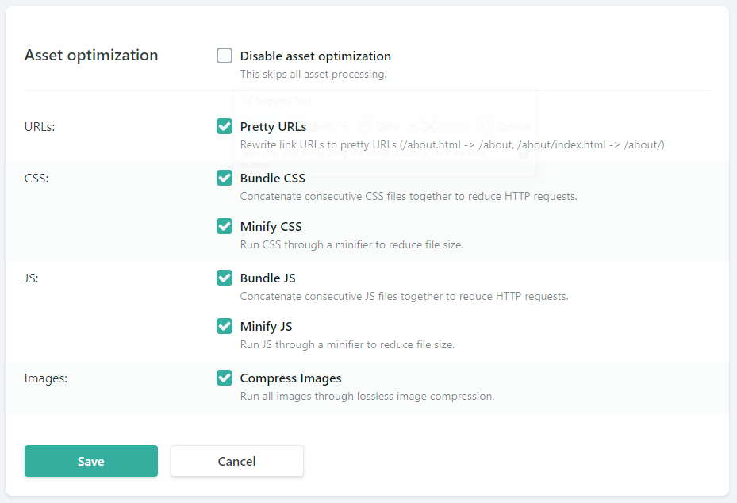

Moving over to Netlify
I have been using GitHub Pages to host this site for the last couple of months, ever since I first created the blog. That was a great way for me to get started. It allowed me to customize the look and feel of the site, automatically published every time I pushed new code, and was free. While it worked well for me, it's about time for me to learn something new. That is the point of this blog, to make incremental improvements.
My coworker mentioned Netlify a couple months back. I looked into it a little bit, but I had just set up my custom domain with GitHub Pages and I didn't want to have to change my DNS settings again. I was also busy trying to figure out a design for the site since it was largely unstyled. With those two excuses, I decided to put off shopping around for another hosting solution.
As of a couple weeks ago, I finally felt that the site design was in a relatively satisfactory state, so I figured I could put a little time into checking out Netlify again. One of their main CTAs is "Deploy your site in seconds," so I decided to test them on that — dang you, marketing, you strike again! I signed up through GitHub, picked which project I wanted to deploy, and bam! It was done. Pretty simple. From there, I just kind of let it sit for a while, not knowing what to do with this new toy. It wasn't until two days ago that I discovered a featured that I couldn't wait to use.
The settings page is packed full of features. They also try to upsell you every which way. "Want analytics in a snap? For just $9 per month..." It does look cool though. Maybe if I were some rich, hoity-toity, millionaire blogger, then I wouldn't mind splurging for the slight savings in effort. But I am trying to learn how to make a website on a budget so I can share my methods with the masses. And I have been wanting to learn Google Analytics for years now. Anywho... Focus, Kyle!
I saw that they offer HTML injection that can be used to insert any code onto every single page of your website. That intrigued me. And this came at the perfect time, as I had just set up a few trial pages with Google Analytics. Now, instead of tediously adding the same analytics tag to every single page I have ever posted, I could just let the internet do it for me!
I tossed in the analytics snippet injection and watched it do its magic (it actually wasn't that simple; I had a bit of trial and error to get the analytics working, but that was entirely me being a dummy). All of a sudden I was able to see analytics for posts dating back to May. Woohoo! With that, I decided it was time to make the switch. I updated my DNS settings to point my domain to the Netlify server and it was off to the races.
I'm trying some other features that are nice to have and come for free with Netlify.

I can get pretty URLs without having to change anything with my project layout. That's pretty cool. I always assumed I would need back-end server logic to handle this, but I guess there is a method for achieving this with a specific folder structure as well. If you don't specify an exact file when you enter a URL, the web server will look for an index.html file by default. I always knew about this for homepages, but it never occurred to me to use this anywhere else. Pretty!
I can opt to bundle and minify all my CSS and JS automatically. This is great because I was splitting all my CSS into separate files for code organization, but that just means more requests for the browser to make. Bundling consolidates all the CSS into one file so the browser only needs to make one request. And minifying it cuts out all the unnecessary whitespace, meaning fewer bytes are sent over the wire. It looks like they also implement cache busting for me because the bundled file name is a hash code and I would imagine it changes every time.
Lastly, I am trying their image optimization. However, I am not really sure what this is doing at the moment. I just checked one image in the production environment and it was 1.3 MB sent over the wire, which is the same as the original file size. I'm not really concerned about this at the moment though because I can easily do some image resizing and optimization on my machine before uploading. I also want to try out Cloudinary, which has a lot of optimization tricks built in as well.
Netlify has more features that look neat to try in the future, but I'll play around with those after I figure out a little more about them. My current setup will work for now.